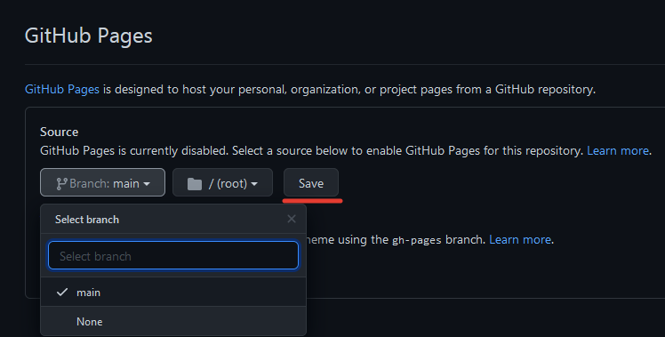

Если же вы заинтересовались в создании своего собственого сайта без каких либо сторонних программ, то следуя достаточно простой инструкции вы сможете создать свой личный сайт.
Для начала, нужно открыть любой текстоый редактор. В моем случае это будет блокнот.
После чего написать любой текст и размететить его следующим образом:
На первый взгляд выглядит очень странно, но особой трудности в написании подобного текста нет.
Теперь объясню зачем нужны теги и за что они отвечают на примере. Тег "head" является заголовком документа, который содержит все не визуальные элементы страницы. Например он может содержать тег "title", который в свою очередь определяет заголовок документа. Элемент "title" не является частью документа и не показывается напрямую на веб-странице. Элемент "body" предназначен для хранения содержания веб-страницы (контента), отображаемого в окне браузера. Информацию, которую следует выводить в документе, следует располагать именно внутри контейнера "body". К такой информации относится текст, изображения, теги, скрипты JavaScript и т.д.
Далее следует просто сохранить этот текстовый документ обязательно добавив ".html" после названия. И вот что получилось по итогу:
Итоговый результат выглядит не выглядит очень впечатляюще. По этому, если хотите действительно красивую оболочку сайта и не хотите тратить время на изучение верстки сайтов, то для вас будет проще скачать готовый html и css код из интернета, изменив его под себя.
В интернете есть достаточно много бесплатных готовых шаблонов. Так что особых сложностей это не доставит.
Далее, после того как сайт был сделан, его нужно будет выложить в интернет. И тут могут возникнуть серьезные проблемы в размещении сайта на сервере. Ведь большинство из предложеных хостингов платные, а те которые бесплатные выглядят достаточно сомнительно. По этому я расскажу на каком хостинге публиковал данный сайт.
Сразу хотелось бы сказать, что для этих целей я использовал GitHub. Это крупнейший веб-сервис для хостинга IT проектов и их совместной разработки. Им пользуются более 56 миллионов разработчиков и 3 миллиона организаций.
На GitHub есть инструкция по публикации сайта, но она на английскоим по этому я переведу ее на русский и покажу, как все правильно сделать.
После регистрации нужно создать новый репозиторий
Далее нам предложут выбрать назваине и доступность репозитория, нам нужно выбрать публичный
Теперь перед нами стоит выбор сздать новый файл или загрузить уже имеющийся. Выбираем загрузить имеющийся
И перетаскиваем из папки на компьютере нужный нам файлы, включая папки с css или javascript и все что нужно для правильной работы сайта, так же, нужно обязательно иметь html документ с названием index.html, именно с него начинается работа всего сайта.
После загрузки даного файла нужно перейти в меню настроек.
Пролистать в самый низ и выбрать раздел GitHub Pages. Выбрать Branch - Main и сохранить изменения.
Нам дадут ссылку на наш сайт.
Ваш сайт готов.